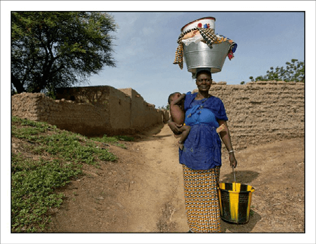
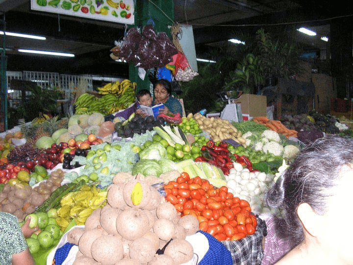
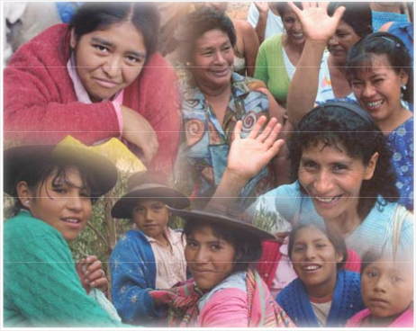
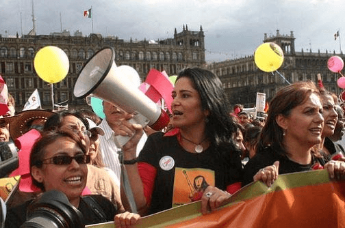
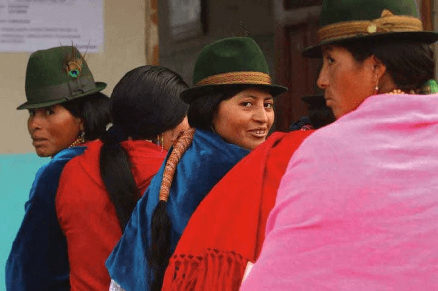
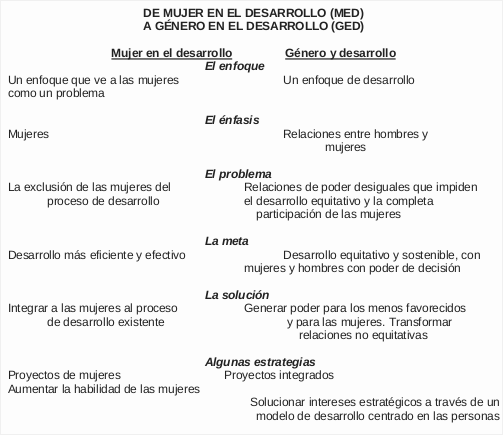
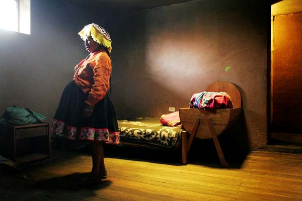
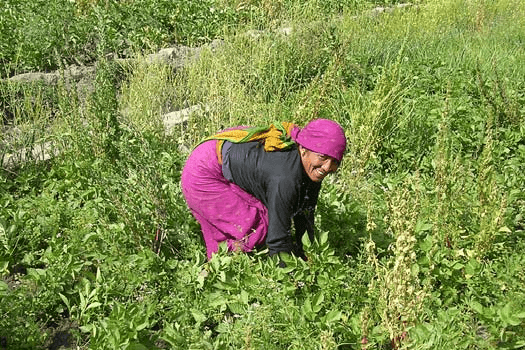
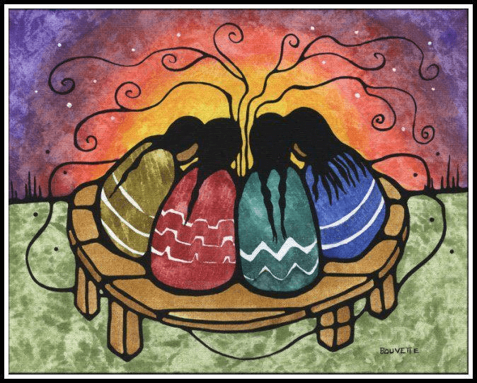

Unidad 2
Modelos de desarrollo, mandatos internacionales y consensos regionales
Desarrollo y género
Cuando nos concentramos en lo local, identificamos las brechas de género, las desigualdades existentes entre varones y mujeres en las regiones y municipios de cada país, que se originan por la discriminación que ha puesto en desventaja a las mujeres con respecto al acceso a los recursos y al ejercicio de los derechos humanos, solamente por el hecho de ser mujeres.

En el campo de lo local hay muchas posibilidades de cerrar las brechas de género y propiciar avances firmes y permanentes hacia un verdadero desarrollo, desde allí es posible definir y aplicar políticas concretas y acciones que promuevan la igualdad y la equidad de género.
Cuando nos concentramos en el desarrollo desde una perspectiva de género analizamos las estructuras sociales y los procesos y relaciones que producen e incrementan una posición de desventaja de la mujer en la sociedad. Este tipo de análisis no consiste en incorporar de manera pasiva a las mujeres en las políticas de desarrollo, sino en cuestionar las premisas que las sustentas y en convertirlas en activas participantes del proceso de desarrollo.
La perspectiva de género ha mostrado que los procesos de desarrollo lejos de ser neutros, han sido desiguales e inequitativos para las mujeres. Como hemos visto en nuestras sociedades reina el sistema patriarcal, esto significa que no es lo mismo nacer mujer o nacer hombre, ya que una u otra categoría determina un acceso diferencial a todo tipo de recursos y también un acceso diferente al ejercicio pleno de los derechos. Aún en muchos países y regiones desde que nacen una gran cantidad de mujeres son excluidas del acceso a las oportunidades y a los bienes y servicios o espacio públicos, las posibilidades de desarrollo aún se concentran en muchos territorios de manera diferencial en los varones.
El paradigma del desarrollo humano sustentable, articula los principios de equidad, empoderamiento y sustentabilidad, es necesario resignificarlo desde la perspectiva de género; es decir, incorporar sus principios para construir nuevos valores y nuevas relaciones basadas en la igualdad, la justicia, la equidad y la paz.

Los paradigmas del desarrollo humano sustentable y de la perspectiva de género van de la mano; pero “no se trata de añadir a las mujeres a un mundo práctico o simbólico pensado sin ellas, ni de agregarle a todo lo que se planifique la frase mágica enfoque de género”. Por el contrario, se busca incorporar las necesidades e intereses de las mujeres a la visión de desarrollo; transformar las relaciones entre mujeres y hombres, pero también entre las mujeres y entre los hombres, en todos los ámbitos de la vida personal y social, privada y pública, sea de índole económica, cultural, educativa, política, etc.
Desde el enfoque del ”Programa de las Naciones Unidas para el Desarrollo” PNUD, el paradigma del desarrollo humano está también conectado con el de la perspectiva de género porque se fundamenta en la noción de desarrollo de capacidades, referidas a las oportunidades para ser y hacer. Este proceso supone la construcción de un entorno en el que las personas puedan vivir de forma productiva y creativa, conforme a sus necesidades e interesesAndira Hernández Monroy y María de la Paz López Barajas, “Desarrollo humano y género en México (2000-2005): avances y desafíos”, en “Programa de las Naciones Unidas para el Desarrollo, Indicadores de Desarrollo Humano y Género en México 2000-2005”, PNUD. El fomento de las capacidades es la vía para que las personas, mujeres y hombres, sus organizaciones y sociedades, obtengan, fortalezcan y mantengan las competencias para establecer y lograr sus propios objetivos de desarrollo.
Esta visión del desarrollo está articulada estrechamente con el enfoque de los derechos humanos, el cual busca reivindicar su reconocimiento, exigibilidad y ejercicio pleno, mas no desde una posición androcéntrica impregnada por los estereotipos de género o centrada en los derechos de los hombres, sino posicionando a la persona humana como sujeto central del desarrollo, de tal forma que los derechos humanos de mujeres y hombres se reconstruyan desde la perspectiva de género.

Desde el enfoque de género se reivindican los derechos de las humanas. Al llamar humanas a las mujeres, se busca visibilizar su exclusión, evidenciar que se las ha subsumido en lo humano masculino y reconocer la humanidad como una construcción histórica y no natural.
En la ”Declaración y Programa de Acción de Viena” se expresa con claridad que la democracia, el desarrollo y el respeto a los derechos humanos y las libertades fundamentales son “conceptos interdependientes que se refuerzan mutuamente”, que “los derechos humanos de la mujer y de la niña son parte inalienable, integrante e indivisible de los derechos humanos universales. La plena participación de la mujer en condiciones de igualdad en la vida política, civil, económica, social y cultural, en los planos nacional, regional e internacional, y la erradicación de todas las formas de discriminación basadas en el sexo, son objetivos prioritarios de la comunidad internacional”.
La humanidad de las mujeres sugiere nuevos paradigmas. Ser humanas equivale a tener derechos, tomar decisiones, satisfacer sus necesidades y contar con las condiciones reales, concretas y cotidianas para ser autónomas, con poder personal y colectivoLagarde y de los Ríos, Marcela, “Identidad de género y derechos humanos”, en “La construcción de las humanas”, pp. 22-23..
Fortalecer la participación equitativa de las mujeres en los ámbitos del espacio local puede ser la vía de empoderamiento que transforme las estructuras sobre las que se asienta la discriminación y en las que la condición social de las mujeres es afectada.

Las mujeres viven las consecuencias de las múltiples jornadas y la desvalorización de su trabajo y capacidades, además de los privilegios masculinos que los excluye de participar en las tareas domésticas y de manera creciente incluso de responsabilidades que eran típicamente de los hombres, como ser los únicos proveedores de ingresos reconocidos en sus hogares.
Si bien los cambios a favor de las mujeres son sustanciosos, no han beneficiado todavía al conjunto de las mujeres; su situación se ha deteriorado y se ha vuelto más compleja debido a las múltiples jornadas de trabajo, a la feminización de las jefaturas de familia, de la pobreza, de la agricultura, de la migración, por mencionar algunos ejemplos. Aún no puede asegurarse que los logros alcanzados hasta ahora hayan propiciado condiciones más equitativas para las mujeres con relación a los hombres.
Modelos de Desarrollo. El enfoque MED y GEDDe la Cruz, C., “Guía Metodológica para integrar la perspectiva de género en proyectos y programas de desarrollo”, Emakunde, Vitoria-Gasteiz, 1998.
En los años setenta surge un enfoque de cambio social denominado Mujer en el Desarrollo MED. Se basaba fundamentalmente en las evidencias que mostraban que el desarrollo afectaba de manera diferente a la mujer que al hombre, y muchas veces la perjudica en vez de beneficiarla. Esta teoría se concentró en la situación de la mujer y en generar políticas y acciones en pos de mejorar su calidad de vida. Fue promovida desde distintos grupos de mujeres, integrantes de Agencias de Desarrollo, de la Academia, etc. de Estados Unidos y Europa, y que ha caracterizado los escritos académicos y las prácticas a partir de los años 70.
Sirve de marco al primer feminismo liberal con una visión internacional y ha sido el resultado del surgimiento de una corriente crítica al desarrollo, que denunció el mito de la neutralidad de género de las estrategias de desarrollo y presentó los temas de mujeres como una preocupación seria y necesaria que debían atender estas estrategias. De esta manera, las activistas de MED pretendieron divorciar las preocupaciones de los enfoques de bienestar, asociados a las actividades asistencialistas de la primera década del desarrollo y su fracaso - que se centraban en los roles de las mujeres como madres y los derechos derivados de esta función-y los enfoques de desarrollo promovidos por esta tendencia.
MED tiene el mérito de haber visibilizado otras potencialidades de las mujeres, diferentes de las reproductivas y su papel en el desarrollo. Sin embargo, su objetivo de integrar a las mujeres de una manera funcional a una estrategia de desarrollo dada, se basa en la premisa que el desarrollo necesita a las mujeres. Para esto pone énfasis en el papel productivo de las mujeres entendiendo su subordinación por su exclusión en el mercado. Estos supuestos han llevado a considerar a las mujeres aisladamente, buscando soluciones parciales y señalando sus necesidades a través de intervenciones específicas o en proyectos con un componente de mujer. Estas acciones han estado mayoritariamente enmarcadas en los enfoques señalados anteriormente, reforzando los roles genéricos sin cuestionar la división social del trabajo.
Una limitación final fue su fracaso en considerar la cuestión del poder masculino como una propiedad de las relaciones de género. La preocupación por las actitudes individuales, más que por los poderes económicos, políticos e interpersonales que los varones ejercen sobre las mujeres, ha llevado a definir un marco teórico que ve las distorsiones de la socialización del rol sexual como la clave explicativa de la desventaja de las mujeres.
Principios del enfoque MED
Equidad
Su propósito es conseguir la equidad para la mujer; reducir la desigualdad de las mujeres. La mujer debe incorporase a la fuerza de trabajo y en los proyectos productivos
Pobreza
Dirigido a que las mujeres incrementen su productividad logrando una remuneración y participando en proyectos generadores de ingresos. La pobreza de la mujer es un problema del subdesarrollo.
Eficiencia
Se busca un desarrollo más eficiente a través de la contribución económica de la mujer y su participación voluntaria en la provisión de servicios básicos que antes proveí el Estado, por lo cual se recargan sus roles de trabajo
La segunda tendencia conocida como Género en el Desarrollo GED, apareció más recientemente, unida a los avances de la teoría feminista, particularmente del desarrollo de los conceptos de género y empoderamiento. Estos avances permiten incorporar en el debate de desarrollo la importancia de las relaciones de poder, del conflicto y las relaciones de género para entender la subordinación de las mujeres, así como tener una visión más integral de la realidad, cuestionar los distintos enfoques de desarrollo y la dirección del cambio necesario.
Desde esta perspectiva, contrariamente a un modelo homogéneo de hogar, los hogares fueron concebidos como un espacio de negociación, cooperación y conflicto. Un análisis en profundidad de las normas, leyes y valores sociales de la sociedad permitió comprender que las diferencias de status de mujeres y varones tienen una profunda implicación en la manera en que participan en el trabajo remunerado y no remunerado y en la vida comunitaria en su conjunto. Estas diferencias incorporan relaciones sociales y de poder que constituyen el punto de partida a considerar para la implementación de los programas de desarrollo y, por lo tanto, influyen sobre los resultados de los mismos.

En los años 80 y 90 la investigación demostró que las relaciones de género median los procesos de desarrollo. Por ejemplo, el análisis de las políticas de estabilización y de ajuste estructural identificó que las desigualdades de género tienen un impacto en el logro de los objetivos macroeconómicos
Por otra parte, la preocupación en torno a las relaciones de género en el desarrollo ha fortalecido la afirmación que la igualdad en la condición de mujeres y varones es fundamental para cada sociedad, y que la igualdad de género es tanto un objetivo como un medio de desarrollo.
¿Qué propone GED?
- Busca una redefinición del concepto de desarrollo y de su práctica que supone repensar el proceso y las prioridades para el cambio.
- Desde su perspectiva es necesario comprender la estructura y la dinámica de las relaciones de género para poder analizar la organización y el proceso social.
- Se ocupa de las relaciones que se entablan entre mujeres y hombres: relaciones de poder en situaciones culturales e históricas concretas, teniendo en cuenta otras posiciones vitales tales como la pertenencia a un grupo social, étnico, de edad, etc.
- Pone énfasis en lo político de las relaciones de género y usa conceptos tales como negociaciones, conflictos, base de recursos, alianzas, etc.
- El concepto de la división genérica del trabajo es central en GED, lo que nos lleva a un análisis de las formas específicas de las interrelaciones de los géneros producido por la división social.
- En lo que concierne al diseño de políticas, la conceptualización de la división genérica del trabajo como relación de conexión social, más que de simple separación, implica que las actividades de las mujeres no pueden verse aisladamente de los diferentes vínculos que definen el proceso de producción en el que están inmersas. La división genérica del trabajo implica tanto un proceso técnico como una interdependencia social entre mujeres y hombres.
- Implica que las necesidades de las mujeres deben ser parte integrante del análisis de las relaciones de género en los hogares, en la comunidad y las instituciones.
- Promueve la eficiencia y la identificación de oportunidades para mejorar la redistribución de género y la equidad en las políticas, proyectos y programas de desarrollo.
- Busca el empoderamiento de las mujeres y de otros colectivos en desventaja, incluyendo la satisfacción de las necesidades prácticas de género para asegurar la alimentación, vivienda, agua y autosuficiencia económica.
- Busca la superación de las desigualdades estructurales a través del poder de movilización de la comunidad.

Tratados y convenciones internacionales“Sìntesis de la Guía Conceptual, Volumen I. Desarrollo Local con Igualdad de Género”, 2009
La incorporación transversal de la perspectiva de género en las políticas públicas tiene sus orígenes, fundamentos y avances en un largo proceso social y político que discurre en varios escenarios, a nivel internacional y nacional, y con la participación de distintos actores, mujeres y hombres, de la política, la administración pública y la sociedad civil.
En el marco de los acuerdos y tratados internacionales, desde la década de los años setenta diversos organismos han emitido recomendaciones dirigidas a aumentar el reconocimiento y ejercicio de los derechos humanos de las mujeres y acrecentar sus oportunidades en diferentes esferas, destacando las relacionadas con la instrumentación.
Este largo recorrido comienza en 1974, veintidós años después de la firma de la ”Convención a favor de los Derechos Políticos de la Mujer” (1952), fecha en la que se firmó la ”Declaración del Establecimiento de un Nuevo Orden Económico Internacional” con el propósito de corregir la creciente brecha entre países desarrollados y países en desarrollo, fijando un precedente para la ”Primera Conferencia Mundial de la Mujer”, realizada en México en 1975: el establecimiento del ”Año Internacional de la Mujer y del Decenio de la Mujer”.“Las cuatro conferencias mundiales sobre la mujer, 1975 a 1995: Una perspectiva histórica”, Período extraordinario de sesiones de la Asamblea General de las Naciones Unidas para examinar la Plataforma de Acción de Beijing, Nueva York, junio de 2000.

Junto con estos objetivos, se definieron metas que debían cumplirse en 1980, algunas de ellas fueron: acceso equitativo de la mujer a la educación, empleo, participación política, servicios de salud, vivienda, nutrición y planificación familiar.
Los resultados inmediatos derivados de la Conferencia fueron la creación del ”Instituto Internacional de Investigaciones y Capacitación para la Promoción de la Mujer” (INSTRAW, por sus siglas en inglés) y del ”Fondo de Desarrollo de las Naciones Unidas para la Mujer” UNIFEM.
Aunado a lo anterior, la movilización de diversos sectores de la población, la preparación de informes, la generación y difusión de información sobre la situación de las mujeres y el establecimiento de compromisos por parte de los gobiernos, ayudaron a visibilizar las condiciones de opresión, subordinación, segregación y discriminación de las mujeres, y colocaron en la agenda pública la exigencia de transformar esta situación que las excluía en razón de su sexo de los avances del desarrollo y de la democracia.Instituto Nacional de las Mujeres, “Programa Nacional de Igualdad de Oportunidades y No Discriminación Contra las Mujeres 2000-2006”, Inmujeres, p. 21.
La trascendencia de este movimiento fue creciendo, ya que el 18 de diciembre de 1979, la Asamblea General de las Naciones Unidas suscribió la ”Convención sobre la Eliminación de Todas las Formas de Discriminación contra la Mujer” (CEDAW, por sus siglas en inglés), la cual entró en vigor como tratado internacional en 1981.
Entre sus preceptos sobresale el referente a la ”Declaración Universal de Derechos Humanos” que reafirma el principio de la no discriminación, que todos los seres humanos nacen libres e iguales en dignidad y derechos y que toda persona puede invocar los derechos y libertades proclamados en ella, sin distinción alguna y, por ende, sin distinción de sexo.
Asimismo, puntualiza que los Estados Partes, en los pactos internacionales de derechos humanos, tienen la obligación de garantizar a la mujer y al hombre la igualdad en el goce de todos los derechos económicos, sociales, culturales, civiles y políticos.
Este instrumento internacional es muy importante, en principio, por ser el primero de carácter vinculatorio 7 dirigido a erradicar la discriminación, entendida, como “toda distinción, exclusión o restricción basada en el sexo, que tenga por objeto o resultado menoscabar o anular el reconocimiento, goce o ejercicio por la mujer, independientemente de su estado civil, sobre la base de la igualdad del hombre y la mujer, de los derechos humanos y las libertades fundamentales en las esferas política, económica, social, cultural y civil o en cualquier otra esfera”. @sidenote{”Convención sobre la Eliminación de Todas las Formas de Discriminación contra la Mujer” (CEDAW, por sus siglas en inglés).}

Establece también el acuerdo para la adopción de medidas especiales de carácter temporal, es decir, acciones afirmativas, encaminadas a acelerar la igualdad de facto (de hecho) entre la mujer y el hombre, y para modificar patrones socioculturales y eliminar prejuicios y prácticas sexistas. En el año 2004, se emitió la ”Recomendación General del Comité de la CEDAW” acerca de las medidas especiales de carácter temporal en donde determina que los Estados Partes tienen la obligación jurídica de respetar, proteger, promover y cumplir este derecho de no discriminación de la mujer y asegurar su desarrollo y adelanto, a fin de mejorar su situación hasta alcanzar la igualdad, tanto de jure como de facto (de dicho como de hecho), respecto del hombre, para:
- Garantizar que no haya discriminación directa ni indirecta contra la mujer en las leyes y en los ámbitos público y privado.
- Mejorar su situación de facto adoptando políticas y programas concretos y eficaces. Afrontar la persistencia de estereotipos basados en el género que afectan a la mujer no sólo a través de actos individuales, sino en las leyes, estructuras e instituciones jurídicas y sociales.
En 1980, con la definición del ”Programa de Acción de Copenhague”, en lo que se denomina también como la ”Segunda Conferencia Mundial de la Mujer”, se asume que los problemas de las mujeres deben vincularse a los del desarrollo y se reconoce que las políticas nacionales tienen consecuencias en sus vidas. Si bien las perspectivas de desarrollo a principios de los años ochenta se valoraban como positivas, también se encontraron muchas inadecuaciones, entre ellas, la falta de participación de os hombres en el mejoramiento de la situación de las mujeres, la voluntad política insuficiente y la escasez de mujeres en puestos de decisión.
En la ”Estrategia Internacional de Desarrollo para el Tercer Decenio de las Naciones Unidas para el Desarrollo” (Nueva York, 1980), se retoma la importancia de incluir la agenda de las mujeres en las políticas públicas, con objeto de reducir las disparidades y dependencia entre países, lograr la eliminación de la pobreza, promover la dignidad humana y mejorar sustancialmente la condición de la mujer. Para ello, se advierte en dicho documento que habrán de adoptarse medidas apropiadas para suprimir los desequilibrios estructurales que agravan y perpetúan las desventajas de las mujeres; persistir en el objetivo de que éstas participen en pie de igualdad, como agentes y como beneficiarias del proceso de desarrollo, incluyendo las actividades de análisis, planificación, adopción de decisiones, ejecución y evaluación; y fortalecer los mecanismos institucionales y administrativos para el logro de estos objetivos.
En la ”Convención Americana de Derechos Humanos” (San José de Costa Rica, 1969), conocida como Pacto de San José, los Estados Partes se comprometen a respetar los derechos y libertades reconocidos en la Convención y a garantizar su libre y pleno ejercicio a toda persona que esté sujeta a su jurisdicción, sin discriminación alguna por motivos de etnia, sexo, idioma, religión, opiniones políticas o de cualquier otra índole, señalando que estos derechos sólo están limitados por los derechos de terceros y por las justas exigencias del bien común.
Como resultado de la ”Tercera Conferencia Mundial de la Mujer”, en Nairobi, los países retoman el compromiso de impulsar el avance de las mujeres y de eliminar su discriminación, indicando que “la discriminación de hecho y la desigual situación de la mujer con respecto al hombre deriva de factores sociales, económicos, políticos y culturales más amplios, justificados hasta entonces sobre la base de diferencias fisiológicas”. Era indiscutible que los ”Objetivos del Decenio de la Mujer”–igualdad, desarrollo y paz–no se habían alcanzado, por tanto, la ”Conferencia de Nairobi” recibió el mandato de buscar nuevas propuestas para superar los obstáculos. Ante tales circunstancias, se comenzó por reconocer que la igualdad de las mujeres incluye todas las esferas de la sociedad y que era necesario impulsar medidas para lograr la igualdad en el empleo, la salud, la educación, los servicios sociales, la industria, la ciencia, las comunicaciones y el medio ambiente.
En la ”Declaración sobre el Derecho al Desarrollo”, en 1986, la Asamblea de las Naciones Unidas reitera que los Estados Partes deben adoptar en el plano nacional todas las medidas necesarias para garantizar el derecho al desarrollo y a la igualdad de oportunidades y para lograr que la mujer participe activamente en el proceso de desarrollo, además de erradicar las injusticias sociales.
En el contexto de un decenio con profundos cambios en la dinámica internacional y en la perspectiva económica de los países, la ”Estrategia Internacional de Desarrollo para el Cuarto Decenio de las Naciones Unidas para el Desarrollo”, 1990, establece como meta el desarrollo acelerado en los países en desarrollo y la cooperación internacional. El reto consiste en mejorar la condición humana en los países en desarrollo, reducir la separación entre países ricos y pobres y aumentar la participación de mujeres y hombres en la vida política y económica. Las esferas prioritarias son: erradicar la pobreza y el hambre y el desarrollo de recursos humanos e institucionales, entre otros. Se reconoce, asimismo, la necesidad de establecer relaciones de estímulo recíproco entre el rápido crecimiento económico y los objetivos sociales. En 1992, en la ”Conferencia de Naciones Unidas sobre Medio Ambiente y Desarrollo”, celebrada en Río de Janeiro, Brasil, se vinculan al desarrollo sustentable la agenda de las mujeres, a los retos del desarrollo social y económico y a la protección al medio ambiente.
En 1993 se celebra en Viena la ”Conferencia Mundial de Derechos Humanos”, desde donde se insta a los gobiernos a que intensifiquen sus esfuerzos a favor de la protección y promoción de los derechos humanos de las mujeres, posicionándolos como elemento central en la agenda global y considerándolos derechos humanos innatos, universales, inalienables e indivisibles.
La ONU señala que el principio de igualdad entre mujeres y hombres no sólo requiere de acciones protectoras, sino de promoción. Los instrumentos de las Naciones Unidas en materia de derechos humanos que establecen comités para vigilar la implementación de los mismos son los siguientes:
- ”Pacto Internacional de Derechos Económicos, Sociales y Culturales” CESCR, 23 marzo 81.
- ”Pacto Internacional de Derechos Civiles y Políticos” CCPR, 23 marzo 1981.
- ”Protocolo Facultativo del CCPR” CCPR-OP1, 15 marzo 2002.
- ”Convención Internacional sobre la Eliminación de Todas las Formas de Discriminación contra la Mujer” (CEDAW, por sus siglas en inglés), 23 marzo 81.
- ”Protocolo Facultativo de la CEDAW” CEDAW-OP, 15 marzo 81. Oficina de la Alta Comisionada de Derechos Humanos.
- En 1966 se convino el ”Pacto Internacional de Derechos Económicos, Sociales y Culturales”, adoptado y abierto a la firma, ratificación y adhesión por la Asamblea General en 1966. Destaca que los Estados parte en el presente Pacto se comprometen a asegurar a mujeres y hombres igual título a gozar de todos los derechos económicos, sociales y culturales enunciados en dicho pacto.
El Estado debe adoptar medidas positivas en todos los ámbitos a fin de dar poder a las mujeres de forma efectiva e igualitaria. La Conferencia declaró que los derechos humanos de las mujeres aplican–por supuesto–en el ámbito privado, en la vida familiar y en las prácticas tradicionales y religiosas. Hace referencia a los instrumentos como el ”Pacto Internacional de Derechos Civiles y Políticos”, que dispone que los Estados Partes se comprometen a garantizar a mujeres y hombres la igualdad en el goce de todos sus derechos civiles y políticos, además establece el principio de no discriminación por razón de sexo. La cuestión de los derechos humanos de la mujer debe ser parte integrante de las actividades de las Naciones Unidas, en particular la promoción de todos los instrumentos relacionados con este tema.
En 1994, en El Cairo, se celebra la ”Conferencia Mundial sobre Población y Desarrollo”, que se propone fortalecer el poder de las mujeres y mejorar sus condiciones de vida para lograr su pleno desarrollo económico, social y político. En esta Conferencia, se proclamaron los derechos sexuales y reproductivos de las mujeres, estableciendo la libre determinación para la maternidad, el número de hijas/os, la elección de pareja y el momento de ser madres.

La ”Cumbre Mundial de Desarrollo de Copenhague” en 1995 establece que el empoderamiento de las mujeres es vital en la resolución de problemas económicos, sociales y ambientales.
Reconoce que no se puede lograr un desarrollo social y económico sostenible sin la plena participación de las mujeres y que su igualdad y equidad respecto al hombre constituye una prioridad para la comunidad internacional y, como tal, debe ser un elemento fundamental del desarrollo económico y social.
La ”Cuarta Conferencia Mundial de la Mujer 10””IV Conferencia Mundial de la Mujer”. Declaración de Beijing. Plataforma de Acción. (Beijing 1995) encuadra en la ”Plataforma de Acción”, el marco normativo y directrices de las políticas de los países participantes, que comprende un conjunto de acciones prioritarias, agrupadas en 12 esferas.

La ”Plataforma de Acción” pide también la adopción de medidas inmediatas y concertadas por todos para crear un mundo pacífico, justo, humano y equitativo, basado en los derechos humanos y las libertades fundamentales, con inclusión del principio de igualdad para todas las personas, independientemente de su edad o situación de vida. Con ese fin, reconoce que se necesita un crecimiento económico amplio y sostenido en el contexto del desarrollo sostenible para impulsar el desarrollo social y la justicia social.
La ”Plataforma de Acción de Beijing” acordó, entre otras medidas:
- Integrar la perspectiva de género en las legislaciones, políticas, programas y proyectos estatales, cuidando que antes de tomar decisiones, se analicen sus posibles efectos en mujeres y hombres, se revise su ejecución periódicamente a fin de garantizar que las mujeres sean las beneficiarias directas del desarrollo y que toda su contribución, tanto remunerada como no remunerada, se tenga en cuenta en la política y la planificación económica.
- Promover estrategias y objetivos nacionales relacionados con la igualdad entre mujeres y hombres a fin de eliminar los obstáculos para el ejercicio de los derechos de la mujer y erradicar cualquier forma de discriminación.
- Encomendar a todos los ministerios el mandato de estudiar la política y los programas desde el punto de vista del género y teniendo en cuenta la ”Plataforma de Acción”, así como establecer o reforzar una estructura de coordinación interministerial para cumplir ese mandato, vigilar los progresos hechos y mantener el enlace con los mecanismos pertinentes.
- Elaborar estrategias y metodologías adecuadas y promover la coordinación y la cooperación dentro del gobierno central a fin de conseguir que una perspectiva de género se incorpore normalmente en todos los procesos de formulación de políticas.
- Se consideró que el cambio de la situación de las mujeres hacia la igualdad no puede tratarse de forma sectorial, sino integrada en todas las políticas a través de la práctica del mainstreaming. La estrategia del mainstreaming fue asumida por la ”Plataforma de Acción” que se adoptó al final de la ”IV Conferencia Mundial sobre Mujeres de Naciones Unidas” (Pekín, 1995), al afirmar en repetidas ocasiones que “los gobiernos y otros actores deberían promocionar una política activa y visible del género en todas las políticas y programas, para que, antes de que se tomen las decisiones, se realice un análisis de los efectos producidos en mujeres y hombres, respectivamente”.
- Los gobiernos que firmaron la Declaración se comprometen a incluir la perspectiva de género en todas sus instituciones, políticas públicas, planificación y toma de decisiones, es decir, se comprometieron a la transversalización de género. En esta conferencia se empezó a hablar también de manera más clara sobre el empoderamiento de las mujeres.
En la ”Segunda Conferencia de las Naciones Unidas sobre Asentamientos Humanos, Hábitat II” (Estambul, 1996), se constató que las mujeres tienen menor acceso a la propiedad, crédito, capacitación y tecnología, lo que disminuye su calidad de vida y la de sus hijas/os. Se propone revertir esta situación.
Derivado de la ”Segunda Cumbre de las Américas” (Santiago, 1998) la OEA adoptó la resolución que invita a la ”Comisión Interamericana de la Mujer” a que desarrolle diversas actividades, entre las que figuran la elaboración del ”Programa Interamericano sobre la Promoción de los Derechos de la Mujer y la Equidad e Igualdad de Género”, el cual plantea los objetivos específicos de promover la equidad e igualdad de género y los derechos humanos de la mujer, afianzando e impulsando la igualdad jurídica, real y formal de la mujer; su acceso pleno e igualitario a los beneficios del desarrollo económico, social, político y cultural, al trabajo y a los recursos productivos; a la vida política del país; a todos los niveles educativos y disciplinas de estudio; a servicios de atención médica durante todo su ciclo de vida, que abarquen la salud física, emocional y mental; a una vida libre de abuso y violencia en todas sus manifestaciones; a la eliminación de patrones culturales y estereotipos que denigran su imagen.

En ”Beijing+5” (Nueva York, 2000), Naciones Unidas convocó a un periodo extraordinario de sesiones para evaluar los logros de la ”Plataforma de Beijing”. En la resolución aprobada por la Asamblea General, basada en el informe del ”Comité Especial Plenario del XXIII Periodo Extraordinario de Sesiones”, emite la ”Declaración Política” (junio de 2000), en la que los gobiernos reafirman el compromiso de lograr las metas y objetivos de la ”Declaración y Plataforma de Acción de Beijing” y las ”Estrategias de Nairobi”, orientadas al adelanto de las mujeres, así como el compromiso de aplicar las doce esferas y a continuar las gestiones a favor de la plena aplicación de la ”Plataforma de Beijing”.
La Declaración renueva la promesa de superar los obstáculos surgidos en su aplicación. Se seguirán adoptando medidas como la incorporación de la perspectiva de género en todas las políticas y programas, la promoción de la plena participación de la mujer y la potenciación de su papel en la sociedad.
Asimismo, redunda en la importancia de incorporar la perspectiva de género en el proceso de aplicación de los resultados de otras conferencias y cumbres de Naciones Unidas, haciendo hincapié en que los hombres deben participar en la promoción de la igualdad entre mujeres y hombres y compartir esa responsabilidad.
En ”Beijing+10” (Nueva York, 2005), celebrada en el marco de la sesión 49 de la ”Comisión de la Condición Jurídica y Social de la Mujer” de la ONU, se evaluó el avance de la ”Plataforma de Acción de Beijing”. La conclusión destaca que existe un consenso mundial en torno a que la potenciación de la mujer es el instrumento más poderoso para alcanzar el desarrollo y reducir la pobreza, y que los obstáculos que aún subsisten para lograr la igualdad entre mujeres y hombres pueden superarse.
De la ”Cumbre Mundial 2005”, emanó un documento en el que se reafirma que la igualdad de género y la promoción y protección de los derechos humanos y las libertades fundamentales, son esenciales para promover el desarrollo, la paz y la seguridad. Se entiende que el progreso de la mujer implica el progreso de todos, por tanto se reafirma que el logro de los objetivos y metas de la ”Declaración y la Plataforma de Acción de Beijing”, los resultados de ”Beijing +5”, son una condición sin la cual no se alcanzarán los objetivos de desarrollo. Se resuelve promover la igualdad entre mujeres y hombres y eliminar la discriminación por motivos de género.
Se reconoce que la incorporación de la perspectiva de género en la actividad general es el instrumento para conseguir la igualdad entre mujeres y hombres. Con ese fin, se comprometen a promover activamente dicho enfoque en la elaboración, aplicación, vigilancia y evaluación de las políticas y programas en todas las esferas políticas, económicas y sociales.
En agosto de 2007, se celebró la ”X Conferencia Regional sobre la Mujer en América Latina y el Caribe”, conocida como ”Consenso de Quito”. Los gobiernos acordaron en esta reunión adoptar medidas en todos los ámbitos necesarios, incluidas las legislativas, presupuestarias y reformas constitucionales, para reforzar la capacidad técnica y de incidencia política de los mecanismos gubernamentales para el adelanto de las mujeres, garantizar que alcancen el más alto nivel jerárquico en la estructura del Estado y se fortalezca la institucionalidad de género en su conjunto, a fin de que puedan cumplir sus mandatos, tales como garantizar la plena participación de las mujeres en cargos públicos y de representación política y así alcanzar la paridad en la institucionalidad estatal (poderes Ejecutivo, Legislativo, Judicial y regímenes especiales y autónomos) y en los ámbitos nacional y local.
Los pronunciamientos abarcan la adopción de medidas legislativas y reformas institucionales para prevenir, sancionar y erradicar el acoso político y administrativo contra las mujeres que acceden a puestos de decisión por vía electoral o por designación, tanto en el nivel nacional como local, así como en los partidos y movimientos políticos.
”Convención lnteramericana para Prevenir, Sancionar y Erradicar la Violencia Contra la Mujer” (Belem do Pará)Camacho, Rosalía. (2000). “Las convenciones internacionales” en “Guía de Capacitación Derechos Humanos de las Mujeres, Tomo 2, Módulo 14”. San José, Costa Rica: IIDH, pp. 42-47
La Asamblea General de la ”Organización de Estados Americanos” OEA aprobó, en junio de 1994, esta convención, que es el primer instrumento legal internacional en el mundo que reconoce, por un lado, el derecho de las mujeres a vivir una vida libre de violencia y, por otro, la violencia contra las mujeres como una violación a los derechos humanos.
La Convención es un instrumento muy poderoso porque contiene mecanismos de protección a los derechos que allí se contemplan. Esto significa que existe así una mayor posibilidad de velar por el cumplimiento de las medidas que todos los Estados firmantes deben tomar para prevenir, sancionar y erradicar la violencia contra las mujeres.
En el proceso de su aprobación fue determinante el papel de las mujeres víctimas de la violencia. Ellas tuvieron la valentía de romper el silencio y de aportar testimonios que señalaron la necesidad de aprobar la convención. También fue importantísima la labor de los movimientos de mujeres de América Latina y el Caribe, que hicieron aportes verdaderamente valiosos en todo ese proceso.
En este contexto se menciona la siguiente definición de violencia contra las mujeres:
[...] debe entenderse por violencia contra la mujer cualquier acción o conducta, basada en su género, que cause muerte, daño o sufrimiento físico, sexual o psicológico a la mujer, tanto en el ámbito público como en el privado.
Esta definición es ampliada por la misma convención al señalar que la violencia de género incluye:
- La violencia física
- La violencia sexual
- La violencia psicológica
La ventaja de esta definición tan amplia es que contempla muchas formas de violencia, pero además establece que la violencia podrá darse tanto en el ámbito privado como en el público, y podrá ser ejercida por distintas personas o instancias, incluyendo a las instancias gubernamentales y sus agentes. Esto hace posible que ciertos actos, que hasta ahora no habían sido considerados como violentos, comiencen a ser parte de la violencia de género; por ejemplo, el mal trato que se nos da en los hospitales cuando somos atendidas en el parto.
Veamos cuáles son los derechos que protege este instrumento normativo a partir de dos afirmaciones centrales:
- que todas las mujeres tenemos derecho a una vida libre de violencia y, por lo tanto, tenemos derecho a:
- Vivir libres de toda discriminación.
- Ser valoradas y educadas sin caer en prácticas sociales y culturales
que se basan en conceptos de inferioridad o subordinación. - que la violencia contra las mujeres impide y anula el ejercicio de nuestro derecho a:
- Que se respete nuestra vida.
- Que se respete nuestra integridad física, psíquica y moral.
- Que se respete nuestra libertad y seguridad personales
- No ser sometidas a torturas.
- Que se respete nuestra dignidad y se proteja a nuestra familia.
- que se nos trate igual ante la ley.
- Acciones rápidas ante los tribunales que nos protejan de aquellos actos que violen nuestros derechos.
Para que lo establecido en la convención se cumpla, es preciso que los Estados adopten medidas como las siguientes:
- Políticas orientadas a prevenir, sancionar y erradicar la violencia, entre las cuales se encuentran:
- No realizar actos de violencia y velar para que tampoco los realicen las autoridades, sus funcionarios y otros agentes.
- Cambiar las leyes y prácticas que no han permitido sancionar la violencia contra las mujeres.
- Aprobar la legislación penal, civil y administrativa que sea necesaria.
- Investigar y procesar a los responsables de los actos de agresión.
- Protegernos del hostigamiento y las amenazas de los violadores.
- Velar para que las mujeres tengamos acceso al debido procedimiento y a la posibilidad de compensación por el daño que se nos haya ocasionado.
- Medidas específicas que incluyan programas para:
- Promover el conocimiento y el respeto del derecho de las mujeres a una vida libre de violencia.
- Modificar las prácticas y conductas que se basan en la idea de la inferioridad de las mujeres y que contribuyen a que se produzca la violencia contra estas.
- Promover la capacitación del personal en la administración de justicia, policías y demás funcionarios encargados de la aplicación de la ley.
- Ofrecer a las mujeres víctimas de violencia todos los servicios necesarios, incluyendo refugios y programas de rehabilitación.
Otro aspecto muy importante que establece esta convención es que afirma que para adoptar las medidas anteriores, los Estados deben tomar en cuenta que existen factores como los siguientes, que facilitan que las mujeres seamos víctimas de violencia:
- Nuestra raza o etnia.
- Si somos migrantes, refugiadas o desplazadas.
- Si estamos embarazadas.
- Si tenemos alguna discapacidad.
- Si somos menores de edad.
- Si somos ancianas.
- Si nuestra situación social y económica es desfavorable.
- Si estamos siendo afectadas por conflictos armados.
- Si nos encontramos privadas de libertad.
Bibliografía
Camacho, Rosalía. (2000). “Las convenciones internacionales”, en “Guía de Capacitación Derechos Humanos de las Mujeres, Tomo 2, Módulo 14”. San José, Costa Rica: IIDH, pp. 42-47
“Convención sobre la Eliminación de Todas las Formas de Discriminación contra la Mujer” (CEDAW, por sus siglas en inglés).
De la Cruz, C., “Guía Metodológica para integrar la perspectiva de género en proyectos y programas de desarrollo”, Emakunde, Vitoria-Gasteiz, 1998.
“Guía Conceptual, Volumen I. Desarrollo Local con Igualdad de Género”, 2009
Hernández Monroy, Andira y María de la Paz López Barajas, “Desarrollo humano y género en México (2000-2005): avances y desafíos”, en “Programa de las Naciones Unidas para el Desarrollo, Indicadores de Desarrollo Humano y Género en México 2000-2005”, PNUD
Instituto Nacional de las Mujeres, “Programa Nacional de Igualdad de Oportunidades y No Discriminación Contra las Mujeres 2000-2006”, Inmujeres, p. 21.
Lagarde y de los Ríos, Marcela, “Identidad de género y derechos humanos. La construcción de las humanas”, pp. 22-23.
Nussbaum, Martha: “Las mujeres y el desarrollo”, Herder, Barcelona, 2002.
Nussbaum, Martha: “Capabilities as Fundamental Entitlements: Sen and
Social Justice”, Feminist Economics, 9 (2-3), 2003.